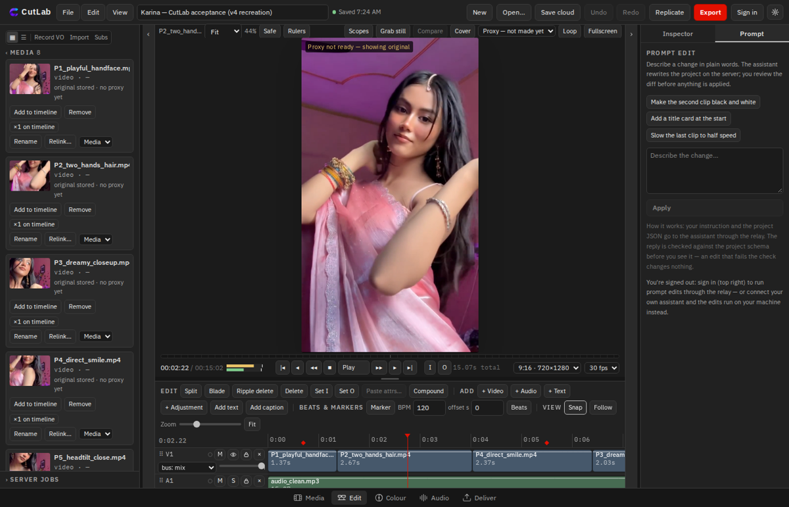

Prompt edits
Describe a change in plain words — make the second clip black and white, slow the last clip to half speed. The assistant rewrites the project on the server and shows you the diff first. Nothing is applied until you accept it, and an edit that fails the check changes nothing.